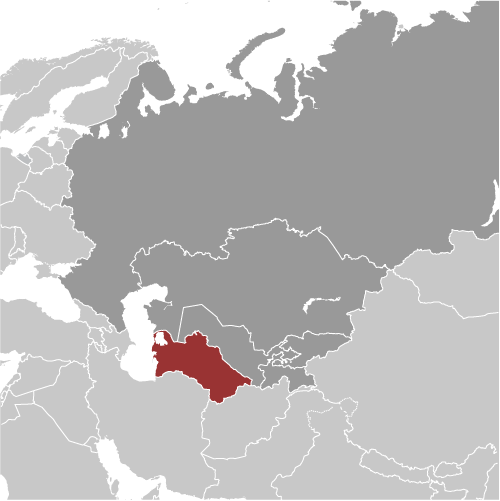
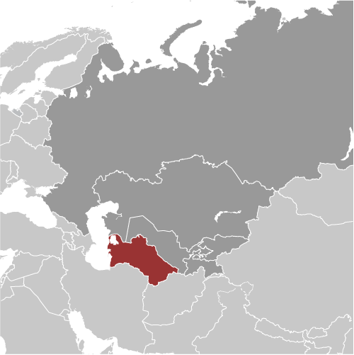

Central Asia :: TURKMENISTAN
Introduction :: TURKMENISTAN
-
Present-day Turkmenistan covers territory that has been at the crossroads of civilizations for centuries. The area was ruled in antiquity by various Persian empires, and was conquered by Alexander the Great, Muslim armies, the Mongols, Turkic warriors, and eventually the Russians. In medieval times, Merv (located in present-day Mary province) was one of the great cities of the Islamic world and an important stop on the Silk Road. Annexed by Russia in the late 1800s, Turkmenistan later figured prominently in the anti-Bolshevik movement in Central Asia. In 1924, Turkmenistan became a Soviet republic; it achieved independence upon the dissolution of the USSR in 1991. Extensive hydrocarbon/natural gas reserves, which have yet to be fully exploited, have begun to transform the country. The Government of Turkmenistan is moving to expand its extraction and delivery projects and has attempted to diversify its gas export routes beyond Russia's pipeline network. In 2010, new gas export pipelines that carry Turkmen gas to China and to northern Iran began operating, effectively ending the Russian monopoly on Turkmen gas exports. In 2016, Russia and Iran halted their purchase of gas from Turkmenistan making China the only buyer of Turkmen gas. President for Life Saparmurat NYYAZOW died in December 2006, and Turkmenistan held its first multi-candidate presidential election in February 2007. Gurbanguly BERDIMUHAMEDOW, a deputy cabinet chairman under NYYAZOW, emerged as the country's new president. He was reelected in 2012 and again in 2017 with over 97% of the vote in both instances, in elections widely regarded as undemocratic.
Geography :: TURKMENISTAN
-
Central Asia, bordering the Caspian Sea, between Iran and Kazakhstan40 00 N, 60 00 EAsiatotal: 488,100 sq kmland: 469,930 sq kmwater: 18,170 sq kmcountry comparison to the world: 54slightly more than three times the size of Georgia; slightly larger than Californiatotal: 4,158 kmborder countries (4): Afghanistan 804 km, Iran 1,148 km, Kazakhstan 413 km, Uzbekistan 1,793 km0 km (landlocked); note - Turkmenistan borders the Caspian Sea (1,768 km)none (landlocked)subtropical desertflat-to-rolling sandy desert with dunes rising to mountains in the south; low mountains along border with Iran; borders Caspian Sea in westmean elevation: 230 melevation extremes: lowest point: Vpadina Akchanaya -81 m (Sarygamysh Koli is a lake in northern Turkmenistan with a water level that fluctuates above and below the elevation of Vpadina Akchanaya, the lake has dropped as low as -110 m)highest point: Gora Ayribaba 3,139 mpetroleum, natural gas, sulfur, saltagricultural land: 72%arable land 4.1%; permanent crops 0.1%; permanent pasture 67.8%forest: 8.8%other: 19.2% (2011 est.)19,950 sq km (2012)the most densely populated areas are the southern, eastern, and northeastern oases; approximately 50% of the population lives in and around the capital of Ashgabatearthquakes; mudslides; droughts; dust storms; floodscontamination of soil and groundwater with agricultural chemicals, pesticides; salination, water logging of soil due to poor irrigation methods; Caspian Sea pollution; diversion of a large share of the flow of the Amu Darya into irrigation contributes to that river's inability to replenish the Aral Sea; desertificationparty to: Biodiversity, Climate Change, Climate Change-Kyoto Protocol, Desertification, Hazardous Wastes, Ozone Layer Protectionsigned, but not ratified: none of the selected agreementslandlocked; the western and central low-lying desolate portions of the country make up the great Garagum (Kara-Kum) desert, which occupies over 80% of the country; eastern part is plateau
People and Society :: TURKMENISTAN
-
5,351,277 (July 2017 est.)country comparison to the world: 119noun: Turkmen(s)adjective: TurkmenTurkmen 85%, Uzbek 5%, Russian 4%, other 6% (2003)Turkmen (official) 72%, Russian 12%, Uzbek 9%, other 7%Muslim 89%, Eastern Orthodox 9%, unknown 2%0-14 years: 25.79% (male 699,612/female 680,583)15-24 years: 18.39% (male 495,025/female 488,930)25-54 years: 43.18% (male 1,147,044/female 1,163,762)55-64 years: 7.9% (male 199,363/female 223,443)65 years and over: 4.74% (male 110,505/female 143,010) (2017 est.)total dependency ratio: 52.7youth dependency ratio: 46.5elderly dependency ratio: 6.2potential support ratio: 16.1 (2015 est.)total: 27.9 yearsmale: 27.5 yearsfemale: 28.4 years (2017 est.)country comparison to the world: 1411.12% (2017 est.)country comparison to the world: 10819.1 births/1,000 population (2017 est.)country comparison to the world: 866.1 deaths/1,000 population (2017 est.)country comparison to the world: 160-1.8 migrant(s)/1,000 population (2017 est.)country comparison to the world: 156the most densely populated areas are the southern, eastern, and northeastern oases; approximately 50% of the population lives in and around the capital of Ashgabaturban population: 50.8% of total population (2017)rate of urbanization: 1.87% annual rate of change (2015-20 est.)ASHGABAT (capital) 746,000 (2015)at birth: 1.05 male(s)/female0-14 years: 1.03 male(s)/female15-24 years: 1.01 male(s)/female25-54 years: 0.98 male(s)/female55-64 years: 0.89 male(s)/female65 years and over: 0.77 male(s)/femaletotal population: 0.98 male(s)/female (2016 est.)24.6 years (2006 est.)42 deaths/100,000 live births (2015 est.)country comparison to the world: 104total: 34.3 deaths/1,000 live birthsmale: 41.2 deaths/1,000 live birthsfemale: 27 deaths/1,000 live births (2017 est.)country comparison to the world: 56total population: 70.4 yearsmale: 67.4 yearsfemale: 73.6 years (2017 est.)country comparison to the world: 1592.07 children born/woman (2017 est.)country comparison to the world: 11050.2% (2015/16)2.1% of GDP (2014)country comparison to the world: 1902.29 physicians/1,000 population (2014)4 beds/1,000 population (2012)improved:urban: 89.1% of populationrural: 53.7% of populationtotal: 71.1% of populationunimproved:urban: 10.9% of populationrural: 46.3% of populationtotal: 28.9% of population (2012 est.)improved:urban: 100% of populationrural: 98.2% of populationtotal: 99.1% of populationunimproved:urban: 0% of populationrural: 1.8% of populationtotal: 0.9% of population (2012 est.)NANANA18.6% (2016)country comparison to the world: 1173.2% (2015)country comparison to the world: 683% of GDP (2012)definition: age 15 and over can read and writetotal population: 99.7%male: 99.8%female: 99.6% (2015 est.)total: 11 yearsmale: 11 yearsfemale: 11 years (2014)
Government :: TURKMENISTAN
-
conventional long form: noneconventional short form: Turkmenistanlocal long form: nonelocal short form: Turkmenistanformer: Turkmen Soviet Socialist Republicetymology: the suffix "-stan" means "place of" or "country," so Turkmenistan literally means the "Land of the Turkmen [people]"presidential republic; authoritarianname: Ashgabat (Ashkhabad)geographic coordinates: 37 57 N, 58 23 Etime difference: UTC+5 (10 hours ahead of Washington, DC, during Standard Time)5 provinces (welayatlar, singular - welayat) and 1 independent city*: Ahal Welayaty (Anew), Ashgabat*, Balkan Welayaty (Balkanabat), Dashoguz Welayaty, Lebap Welayaty (Turkmenabat), Mary Welayatynote: administrative divisions have the same names as their administrative centers (exceptions have the administrative center name following in parentheses)27 October 1991 (from the Soviet Union)Independence Day, 27 October (1991)history: adopted 18 May 1992amendments: proposed by the National Assembly; passage requires two-thirds majority vote of the total Assembly membership or absolute majority approval in a referendum; amended several times, last in 2016; note - in mid-2014, the president established a Constitutional Commission to initiate a process for developing constitutional reforms (2017)civil law system with Islamic law influenceshas not submitted an ICJ jurisdiction declaration; non-party state to the ICCtcitizenship by birth: nocitizenship by descent only: at least one parent must be a citizen of Turkmenistandual citizenship recognized: yesresidency requirement for naturalization: 7 years18 years of age; universalchief of state: President Gurbanguly BERDIMUHAMEDOW (since 14 February 2007); note - the president is both chief of state and head of governmenthead of government: President Gurbanguly BERDIMUHAMEDOW (since 14 February 2007)cabinet: Cabinet of Ministers appointed by the presidentelections/appointments: president directly elected by absolute majority popular vote in 2 rounds if needed for a 7-year term (no term limits); election last held on 12 February 2017 (next to be held in February 2024)election results: Gurbanguly BERDIMUHAMEDOW reelected president; percent of vote - Gurbanguly BERDIMUHAMEDOW (DPT) 97.7%, other 2.3%description: unicameral National Assembly or Mejlis (125 seats; members directly elected from single-seat constituencies by absolute majority vote; members serve 5-year terms)elections: last held on 15 December 2013 (next to be held in December 2018), although interim elections are held on an ad hoc basis to fill vacant setselection results: percent of vote by party - NA; seats by party - DPT 47, Organization of Trade Unions of Turkmenistan 33, Women's Union of Turkmenistan 16, PIE 14, Magtymguly Youth Organization 8, independent 7; note - all of these parties support President BERDIMUHAMIDOWhighest court(s): Supreme Court of Turkmenistan (consists of the court president and 21 associate judges and organized into civil, criminal, and military chambers)judge selection and term of office: judges appointed by the president for 5-year termssubordinate courts: High Commercial Court; appellate courts; provincial, district, and city courts; military courtsAgrarian Party of Turkmenistan or APT [Ovezmyrat ENERMYRADOW]Democratic Party of Turkmenistan or DPT [Kasymguly BABAYEW]Organization of Trade Unions of TurkmenistanMagtymguly Youth OrganizationParty of Industrialists and Entrepreneurs or PIE [Ovezmammed MAMMEDOW]Women's Union of Turkmenistannote: a law authorizing the registration of political parties went into effect in January 2012; unofficial, small opposition movements exist abroadnoneADB, CIS (associate member, has not ratified the 1993 CIS charter although it participates in meetings and held the chairmanship of the CIS in 2012), EAPC, EBRD, ECO, FAO, G-77, IBRD, ICAO, ICRM, IDA, IDB, IFC, IFRCS, ILO, IMF, IMO, Interpol, IOC, IOM (observer), ISO (correspondent), ITU, MIGA, NAM, OIC, OPCW, OSCE, PFP, UN, UNCTAD, UNESCO, UNHCR, UNIDO, UNWTO, UPU, WCO, WFTU (NGOs), WHO, WIPO, WMOchief of mission: Ambassador Mered Bairamovich ORAZOW (since 14 February 2001)chancery: 2207 Massachusetts Avenue NW, Washington, DC 20008telephone: [1] (202) 588-1500FAX: [1] (202) 588-0697chief of mission: Ambassador Allan MUSTARD (since 20 January 2015)embassy: No. 9 1984 Street (formerly Pushkin Street), Ashgabat, Turkmenistan 744000mailing address: 7070 Ashgabat Place, Washington, DC 20521-7070telephone: [993] (12) 94-00-45FAX: [993] (12) 94-26-14green field with a vertical red stripe near the hoist side, containing five tribal guls (designs used in producing carpets) stacked above two crossed olive branches; five white stars and a white crescent moon appear in the upper corner of the field just to the fly side of the red stripe; the green color and crescent moon represent Islam; the five stars symbolize the regions or welayats of Turkmenistan; the guls reflect the national identity of Turkmenistan where carpet-making has long been a part of traditional nomadic lifenote: the flag of Turkmenistan is the most intricate of all national flagsAkhal-Teke horse; national colors: green, whitename: "Garassyz, Bitarap Turkmenistanyn" (Independent, Neutral, Turkmenistan State Anthem)lyrics/music: collective/Veli MUKHATOVnote: adopted 1997, lyrics revised in 2008, following the death of President Saparmurat NYYAZOW, to eliminate references to him
Economy :: TURKMENISTAN
-
Turkmenistan is largely a desert country with intensive agriculture in irrigated oases and significant natural gas and oil resources. The two largest crops are cotton, most of which is produced for export, and wheat, which is domestically consumed. Although agriculture accounts for roughly 9% of GDP, it continues to employ nearly half of the country's workforce. Hydrocarbon exports (mainly natural gas) make up 25% of Turkmenistan’s GDP, the bulk of which is natural gas going to China. Ashgabat has explored two initiatives to bring gas to new markets: a trans-Caspian pipeline that would carry gas to Europe and the Turkmenistan-Afghanistan-Pakistan-India gas pipeline. Both face major financing and security hurdles and are unlikely to be completed soon.Turkmenistan’s autocratic governments under presidents NIYAZOW (1991-2006) and BERDIMUHAMEDOW (since 2007) have made little progress improving the business climate, privatizing state-owned industries, and combatting corruption, limiting economic development outside the energy sector. High energy prices in the mid-2000s allowed the government to undertake extensive development and social spending, including providing heavy utility subsidies.Low energy prices since mid-2014 are hampering Turkmenistan’s economic growth and reducing government revenues. The government has cut subsidies in several areas, and wage arrears have increased. In January 2014, the Central Bank of Turkmenistan devalued the manat by 19%, and downward pressure on the currency continues. There is a widening spread between the official exchange rate (3.49 TMM per US dollar) and the black market exchange rate (approximately 7 TMM per US dollar). Currency depreciation, corruption, isolationist policies, and limited spending on public services has resulted in a stagnate economy that is nearing crisis. Turkmenistan claims substantial foreign currency reserves, but non-transparent data limit international institutions’ ability to verify this information.$95.5 billion (2016 est.)$88.78 billion (2015 est.)$82.5 billion (2014 est.)note: data are in 2016 dollarscountry comparison to the world: 84$36.18 billion (2016 est.)6.2% (2016 est.)6.5% (2015 est.)10.3% (2014 est.)country comparison to the world: 23$17,500 (2016 est.)$16,700 (2015 est.)$15,900 (2014 est.)note: data are in 2016 dollarscountry comparison to the world: 9523.5% of GDP (2016 est.)19.1% of GDP (2015 est.)12.3% of GDP (2014 est.)country comparison to the world: 64household consumption: 50%government consumption: 8.9%investment in fixed capital: 30.8%investment in inventories: 0%exports of goods and services: 28%imports of goods and services: -17.7% (2016 est.)agriculture: 7.5%industry: 45.1%services: 47.4% (2016 est.)cotton, grain, melons; livestocknatural gas, oil, petroleum products, textiles, food processing1% (2016 est.)country comparison to the world: 1422.305 million (2013 est.)country comparison to the world: 117agriculture: 48.2%industry: 14%services: 37.8% (2004 est.)11% (2014 est.)10.6% (2013)country comparison to the world: 1390.2% (2012 est.)lowest 10%: 2.6%highest 10%: 31.7% (1998)40.8 (1998)country comparison to the world: 58revenues: $4.629 billionexpenditures: $5.086 billion (2016 est.)12.8% of GDP (2016 est.)country comparison to the world: 202-1.3% of GDP (2016 est.)country comparison to the world: 7223.9% of GDP (2016 est.)19.4% of GDP (2015 est.)country comparison to the world: 176calendar year3.6% (2016 est.)16% (2015 est.)country comparison to the world: 2055% (31 December 2014)5% (31 December 2013)country comparison to the world: 81$1.326 billion (31 December 2015 est.)$1.255 billion (31 December 2014 est.)country comparison to the world: 145$12.23 billion (31 December 2015 est.)$5.632 billion (31 December 2014 est.)country comparison to the world: 101$28.4 billion (31 December 2015 est.)$13.09 billion (31 December 2014 est.)country comparison to the world: 81$NA$-7.605 billion (2016 est.)$-1.113 billion (2015 est.)country comparison to the world: 161$6.987 billion (2016 est.)$9.561 billion (2015 est.)country comparison to the world: 100gas, crude oil, petrochemicals, textiles, cotton fiberChina 70%, Turkey 5.3%, Italy 5.3%, Afghanistan 4.5%, Russia 4.1% (2016)$5.001 billion (2016 est.)$6.059 billion (2015 est.)country comparison to the world: 121machinery and equipment, chemicals, foodstuffsTurkey 26.4%, Russia 10.5%, Japan 8.6%, Germany 8.2%, South Korea 7.8%, China 7.2%, Italy 5.2% (2016)$25.05 billion (31 December 2016 est.)$26.64 billion (31 December 2015 est.)country comparison to the world: 56$425.3 million (31 December 2016 est.)$402.8 million (31 December 2015 est.)country comparison to the world: 182$3.061 billion (2013 est.)$3.117 billion (2012 est.)country comparison to the world: 111Turkmen manat (TMM) per US dollar -3.5 (2016 est.)3.5 (2015 est.)3.5 (2014 est.)2.85 (2013 est.)2.85 (2012 est.)
Energy :: TURKMENISTAN
-
electrification - total population: 100% (2016)21.18 billion kWh (2015 est.)country comparison to the world: 7415.09 billion kWh (2015 est.)country comparison to the world: 793.201 billion kWh (2015 est.)country comparison to the world: 410 kWh (2016 est.)country comparison to the world: 2134.001 million kW (2015 est.)country comparison to the world: 89100% of total installed capacity (2015 est.)country comparison to the world: 200% of total installed capacity (2015 est.)country comparison to the world: 1970% of total installed capacity (2015 est.)country comparison to the world: 2100% of total installed capacity (2015 est.)country comparison to the world: 209230,800 bbl/day (2016 est.)country comparison to the world: 3562,880 bbl/day (2014 est.)country comparison to the world: 410 bbl/day (2014 est.)country comparison to the world: 201600 million bbl (1 January 2017 es)country comparison to the world: 45191,100 bbl/day (2014 est.)country comparison to the world: 51158,000 bbl/day (2015 est.)country comparison to the world: 6653,780 bbl/day (2014 est.)country comparison to the world: 510 bbl/day (2014 est.)country comparison to the world: 21383.7 billion cu m (2015 est.)country comparison to the world: 1067.52 billion cu m (2015 est.)country comparison to the world: 2040.3 billion cu m (2015 est.)country comparison to the world: 90 cu m (2014 est.)country comparison to the world: 1997.504 trillion cu m (1 January 2017 es)country comparison to the world: 667 million Mt (2013 est.)country comparison to the world: 52
Communications :: TURKMENISTAN
-
total subscriptions: 665,000subscriptions per 100 inhabitants: 13 (July 2016 est.)country comparison to the world: 91total: 8.575 millionsubscriptions per 100 inhabitants: 162 (July 2016 est.)country comparison to the world: 103general assessment: telecommunications network is gradually improvingdomestic: Turkmentelekom, in cooperation with foreign partners, has installed high-speed fiber-optic lines and has upgraded most of the country's telephone exchanges and switching centers with new digital technology; combined fixed-line and mobile teledensity is about 170 per 100 persons; Russia's Mobile Telesystems, the only foreign mobile-cellular service provider in Turkmenistan, had its operating license suspended in December 2010 but was able to resume operations in September 2012; Turkmenistan's first telecommunication satellite was launched in 2015 and is expected to greatly improve connectivity in the countryinternational: country code - 993; linked by fiber-optic cable and microwave radio relay to other CIS republics and to other countries by leased connections to the Moscow international gateway switch; an exchange in Ashgabat switches international traffic through Turkey via Intelsat; satellite earth stations - 1 Orbita and 1 Intelsat (2016)broadcast media is government controlled and censored; 7 state-owned TV and 4 state-owned radio networks; satellite dishes and programming provide an alternative to the state-run media; officials sometimes limit access to satellite TV by removing satellite dishes (2007).tmtotal: 951,925percent of population: 18.0% (July 2016 est.)country comparison to the world: 133
Transportation :: TURKMENISTAN
-
number of registered air carriers: 1inventory of registered aircraft operated by air carriers: 23annual passenger traffic on registered air carriers: 2,138,389annual freight traffic on registered air carriers: 0 mt-km (2015)EZ (2016)26 (2013)country comparison to the world: 126total: 21over 3,047 m: 12,438 to 3,047 m: 91,524 to 2,437 m: 9914 to 1,523 m: 2 (2013)total: 51,524 to 2,437 m: 1under 914 m: 4 (2013)1 (2013)gas 7,500 km; oil 1,501 km (2013)total: 2,980 kmbroad gauge: 2,980 km 1.520-m gauge (2014)country comparison to the world: 59total: 58,592 kmpaved: 47,577 kmunpaved: 11,015 km (2002)country comparison to the world: 721,300 km (Amu Darya River and Kara Kum Canal are important inland waterways) (2011)country comparison to the world: 55total: 11by type: cargo 4, chemical tanker 1, petroleum tanker 5, refrigerated cargo 1 (2010)country comparison to the world: 110major seaport(s): Caspian Sea - Turkmenbasy
Military and Security :: TURKMENISTAN
-
Turkmen Armed Forces: Ground Forces, Navy, Air and Air Defense Forces (2013)18-27 years of age for compulsory male military service; 2-year conscript service obligation; 20 years of age for voluntary service; males may enroll in military schools from age 15 (2015)
Transnational Issues :: TURKMENISTAN
-
cotton monoculture in Uzbekistan and Turkmenistan creates water-sharing difficulties for Amu Darya river states; field demarcation of the boundaries with Kazakhstan commenced in 2005, but Caspian seabed delimitation remains stalled with Azerbaijan, Iran, and Kazakhstan due to Turkmenistan's indecision over how to allocate the sea's waters and seabed; bilateral talks continue with Azerbaijan on dividing the seabed and contested oilfields in the middle of the Caspianstateless persons: 5,744 (2016)current situation: Turkmenistan is a source country for men, women, and children subjected to forced labor and sex trafficking; Turkmen who migrate abroad are forced to work in the textile, agriculture, construction, and domestic service industries, while women and girls may also be sex trafficked; in 2014, men surpassed women as victims; Turkey and Russia are primary trafficking destinations, followed by the Middle East, South and Central Asia, and other parts of Europe; Turkmen also experience forced labor domestically in the informal construction industry; participation in the cotton harvest is still mandatory for some public sector employeestier rating: Tier 2 Watch List – Turkmenistan does not fully comply with the minimum standards for the elimination of trafficking; however, it is making significant efforts to do so; in 2014, Turkmenistan was granted a waiver from an otherwise required downgrade to Tier 3 because its government has a written plan that, if implemented, would constitute making significant efforts to bring itself into compliance with the minimum standards for the elimination of trafficking; the government made some progress in its law enforcement efforts in 2014, convicting more offenders than in 2013; authorities did not make adequate efforts to identify and protect victims and did not fund international organizations or NGOs that offered protective services; some victims were punished for crimes as a result of being trafficked (2015)transit country for Afghan narcotics bound for Russian and Western European markets; transit point for heroin precursor chemicals bound for Afghanistan